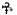

55
Langdon ve Vittoria, Gizli Arşivler’in dışındaki avluya çıkmışlardı. Langdon’ın ciğerlerine dolan temiz hava uyuşturucu etkisi yarattı. Gözlerinin önünde uçuşan mor noktalar çabucak kayboldu. Ama, suçluluk duygusu kaybolmadı. Dünyanın en özel kasasından, paha biçilmez bir kutsal emanet hırsızlığına suç ortaklığı etmişti. Camerlengo, size güveniyorum, demişti.
Vittoria sayfayı hâlâ elinde tutarak, Via Borgia’dan Olivetti’nin ofisine doğru koşar adımlarla yürürken, “Çabuk ol,” dedi.
“Eğer o papirüsün üzerine bir parça su gelirse...”
“Sakin ol. Bu şeyin şifresini çözünce, kutsal 5. sayfalarını geri vereceğiz.”
Langdon, ona yetişmek için hızlandı. Bir suçlu gibi hissetmenin ötesinde, belgenin büyüleyici anlamları yüzünden hâlâ sersem gibiydi. John Milton bir Illuminati üyesiydi. Şiiri, Galileo’ya Sayfa 5’te yayımlanması için yazmıştı... Vatikan’ın gözlerinden çok uzakta.
Avludan çıkarlarken, Vittoria sayfayı Langdon’a uzattı. “Bu şeyin şifresini çözebilir misin? Yoksa, beynimizi boş yere mi patlattık?”
Langdon belgeyi dikkatle elleri arasına aldı. Hiç duraksamadan, tüvit ceketinin iç ceplerinden birine sokup gün ışığından ve nem tehlikesinden uzaklaştırdı. “Çözdüm bile.”
Vittoria durdu. “Ne yaptın?”
Langdon yürümeye devam etti.
Vittoria, ona yetişmek için koştu. “Bir kez okudun! Zor olacağını düşünüyordum.”
Langdon, onun haklı olduğunu biliyordu, yine de segno’yu tek okuyuşta çözmüştü. Kahramanlık beyitlerinden oluşan mükemmel bir dörtlüktü ve bilimin ilk mihrabı kendisini saf bir açıklıkla göstermişti. Görevi başarmanın verdiği rahatlık, huzurunu kaçırıyordu. O, Püriten ahlak sisteminin çocuğuydu. Eski New England vecizesini söyleyen babasının sesi hâlâ kulaklarındaydı: Eğer çok zor olmadıysa, yanlış yapmışsındır. Langdon deyişin yanlış olmasını umuyordu. Daha hızlı yürürken, “Şifreyi çözdüm,” dedi. “İlk cinayetin nerede olacağını biliyorum. Olivetti’yi uyarmamız gerekiyor.”
Vittoria, ona yaklaştı. “Nasıl şimdiden bilebilirsin? Şu şeye bir daha bakayım.” Bir boksörün el çabukluğuyla, çevik elini Langdon’ın cebine soktu ve kâğıdı tekrar dışarı çıkardı.
Langdon, “Dikkat et!” dedi. “Onu böyle...”
Vittoria, ona aldırmadı. Elinde kâğıtla, yanında yürümeye başladı, belgeyi akşam ışığına tutarak, sayfa kenarındaki boşlukları inceliyordu. Yüksek sesle okumaya başladığında, Langdon sayfayı yeniden ele geçirmek için hamle yaptı, ama bunun yerine, heceleri yürüyüşüyle mükemmel bir ritim tutturarak okuyan Vittoria’nın aksanlı alto sesiyle büyülendiğini fark etti.
Dizenin yüksek sesle okunduğunu duyan Langdon bir an için zaman değiştirdi... sanki, bunun bir sınav, bir harita, bilimin dört mihrabını açıklayan bir ipucu olduğunun bilinciyle... Roma’daki gizli bir yolu aydınlatan dört işareti ortaya çıkaran şiiri ilk kez dinleyen, Galileo’nun çağdaşlarından biriydi... Dizeler, Vittoria’nın dudaklarından bir şarkı gibi dökülüyordu.
Şeytan gözlü toprak Santi kabri
Roma’da ara mistik öğeyi
Işık yolu hazır, kutsal sınav
Melek rehberliğinde yüce av
Vittoria şiiri iki kez okudu ve sonra, sanki eski kelimelerin kendiliğinden yankılanması için sustu.
Langdon içinden, Şeytan gözlü toprak Santi kabri, diye tekrarladı. Şiir bu konuda son derece açıktı. Aydınlanma Yolu Santi’nin kabrinden başlıyordu. İşaretler bu noktadan sonra Roma’nın içinden geçerek Yol’u aydınlatıyordu.
Şeytan gözlü toprak Santi kabri
Roma’da ara mistik öğeyi
Mistik öğeler. Bu da açıktı. Toprak, Hava, Ateş, Su. Bilimin öğeleri, dini heykel görüntüsündeki dört Illuminati işareti.
Vittoria, “İlk işaret,” dedi. “Santi’nin kabrinde olmalı.”
Langdon gülümsedi. “Sana o kadar zor olmadığını söylemiştim.”
Aniden heyecanlanarak, “Peki Santi kim?” diye sordu. “Mezarı nerde?”
Langdon kendi kendine kıkırdadı. Çok az insanın Santi’yi tanımasına şaşırıyordu. Yaşamış en ünlü Rönesans ressamlarından birinin soyadıydı. İlk adını bütün dünya tanıyordu. Yirmi beş yaşında Papa II. Julius için çalışmaya başlayan dâhi çocuk, henüz otuz sekiz yaşındayken öldüğünde ardında, dünyanın gördüğü en muhteşem fresk koleksiyonunu bırakmıştı. Santi sanat dünyasında bir devdi ve yalnızca ilk adıyla tanınmak... Napoleon, Galileo ve İsa gibi sadece seçkin birkaç kişinin... ve elbette Langdon’ın Harvard yurtlarında duyduğu -Sting, Madonna, Jewel ve eskiden Prince diye tanınıp da sonradan adını...  işaretiyle değiştiren yarı tanrıların erişebildiği bir şöhretti. Langdon, Prince’e bu yüzden “İkicinsli Hayat Sembolüyle Kesişen Tau Haçı” ismini takmıştı.
Langdon, “Santi,” dedi. “Büyük Rönesans ustası Raphael’in soyadıdır.”
Vittoria şaşkın görünüyordu. “Raphael mi? Bildiğimiz Raphael mi?”
“Yegâne ve tek Raphael.” Langdon telaşla İsviçreli Muhafızlar Ofisi’ne doğru yürüyordu.
“O zaman Yol Raphael’in kabrinden mi başlıyor?”
Koşuştururlarken Langdon, “Doğrusu çok mantıklı,” dedi. “Illuminati büyük ressam ve heykeltıraşları genellikle aydınlanmanın şerefli kardeşleri olarak kabul ederlerdi. Illuminati, Raphael’in kabrini bir tür övgü maksadıyla seçmiş olabilir.” Langdon bununla birlikte, diğer pek çok dini eser sanatçısı gibi Raphael’in de gizli bir ateist olduğundan şüphelenildiğini biliyordu.
Vittoria tekrar kâğıdı dikkatle Langdon’ın cebine yerleştirdi. “Peki nerede yatıyor?”
Langdon derin bir nefes aldı. “İster inan, ister inanma Raphael Pantheon’da yatıyor.”
Vittoria şüpheyle bakıyordu. “Pantheon mu?”
“Bildiğimiz Raphael, bildiğimiz Pantheon’da.” Langdon ilk işaretin yerleştirileceği yerin Pantheon olacağını kendisinin de tahmin etmediğini itiraf etmek zorundaydı. İlk bilim mihrabının gözlerden uzak, sessiz bir kilise olacağını tahmin etmişti. 1600’lerde bile, o delikli devasa kubbesiyle Pantheon, Roma’da en iyi bilinen yerlerden biriydi.
Vittora, “Pantheon aynı zamanda bir kilise mi?” diye sordu.
“Roma’daki en eski Katolik Kilisesi.”
Vittoria başını iki yana salladı. “Ama ilk kardinalin Pantheon’da öldürüleceğine gerçekten inanıyor musun? Roma’daki en yoğun turistik merkezlerden biri.”
Langdon omuzlarını silkti. “Illuminati, tüm dünyanın seyretmesini istediğini söyledi. Bir kardinali Pantheon’da öldürmek mutlaka insanları hayrete düşürecektir.”
“Ama birini Pantheon’da öldürdükten sonra nasıl fark edilmeden oradan çıkmayı düşünüyor? Bu mümkün değil.”
“Vatikan Şehri’nden dört kardinali kaçırmak kadar mümkün. Şiir açık.”
“Ve sen Raphael’in Pantheon’da gömülü olduğuna eminsin öyle mi?”
“O kabri defalarca gördüm.”
Hâlâ kaygılı görünen Vittoria başını salladı. “Saat kaç?”
Langdon saatine baktı. “On dokuz otuz.”
“Pantheon uzak mı?”
“Bir buçuk kilometre kadar. Vaktimiz var.”
“Şiir Santi’nin toprak kabri diyor. Bu sana bir şey ifade ediyor mu?”
Langdon, Muhafızlar Avlusu’nu koşar adımlarla çaprazlamasına geçiyordu. “Dünyevi mi? Doğrusu Roma’da Pantheon’dan daha fazla toprağa ait bir yer yok. İsmini, burada inanılan ilk dinden almış... Panteizm. Tüm tanrılara, özellikle de paganların Toprak Ana tanrılarına tapılırdı.”
Langdon mimarlık öğrencisiyken, Pantheon’un ana salon boyutlarının Gaea’nın -Dünya Tanrıçası- onuruna yapıldığını öğrendiğine hayret etmişti. Orantılar o kadar mükemmeldi ki, dev bir küre binanın içine bir milimetre bile taşmadan yerleşebiliyordu.
Biraz daha ikna olmuşa benzeyen Vittoria, “Peki,” dedi. “Ya Şeytan gözü? Şeytan gözlü toprak Santi kabri?”
Langdon bu konuda pek emin değildi. Mantık yürüterek, “Şeytan gözü yuvarlak pencere anlamında kullanılmış olmalı,” dedi. “Pantheon’un damındaki ünlü dairesel açıklık.”
Yanında hiç zorlanmadan yürüyen Vittoria, “Ama orası bir kilise,” dedi. “Açıklığa neden Şeytan gözü desinler?”
Aslında Langdon da bunu düşünüyordu. Daha önce “Şeytan Gözü” terimini hiç duymamıştı, ama sözleri mevcut duruma uygun düşen, Pantheon’la ilgili bir on altıncı yüzyıl eleştirisini hatırlıyordu. Venerable Bede, IV. Boniface tarafından Tanrı’ya adandığı zaman, deliği, binadan kaçmaya çalışan Şeytanların açtığını yazmıştı.
Küçük bir avluya girerlerken Vittoria, “Ve eğer Raphael ismiyle tanınıyorsa Illuminati neden Santi ismini kullansın?” diye sordu.
“Çok soru soruyorsun.”
“Babam da öyle derdi.”
“İki nedeni olabilir. Birincisi, Raphael kelimesinde çok fazla hece var. Şiirin kahramanlık beyitine uymazdı.”
“Biraz zorlama oldu.”
Langdon, ona katılıyordu. “Tamam, o zaman belki de ‘Santi’ kelimesini kullanmak ipucunu daha anlaşılmaz hale getiriyor, böylece sadece aydınlanmış kişiler Raphael’den bahsettiğini anlıyordu.”
Vittoria buna da inanmışa benzemiyordu. “Raphael hayattayken soyadının gayet iyi bilindiğine eminim.”
“Öyle değildi ama. Tek isimle tanınmak bir statü göstergesiydi. Raphael günümüzdeki çoğu pop yıldızı gibi, soyadını saklamıştı. Mesela Madonna. Asla soyadı Ciccone’yi kullanmaz.”
Vittoria hayret etmişti. “Sen ‘Madonna’nın soyadını mı biliyorsun?”
Langdon verdiği örnekten pişman olmuştu. 10.000 yeniyetmeyle bir arada yaşayınca, insan zihnine doluşan gereksiz bilgilerin sayısı gerçekten şaşırtıcı oluyordu.
Vittoria ile birlikte İsviçreli Muhafızlar Ofisi’ne giden son kapıyı geçtikten sonra, ilerleyişleri bir uyarıyla durduruldu.
Arkalarından bir ses, “Para!” diye kükredi.
Langdon ile Vittoria topukları üstünde dönünce, kendilerini bir tüfeğin namlusuna bakarken buldular.
Vittoria geriye doğru sıçrayarak, “Attento!” diye bağırdı. “Dikkat et...”
Silahın horozunu kaldıran muhafız, “Non sportarti!” diye seslendi.
Avlunun karşı tarafından bir ses, “Soldato!”32 diye buyurdu. Olivetti güvenlik merkezinden dışarı çıkıyordu. “Bırak onları!”
Muhafız şaşkınlık içinde bakıyordu. “Ma signore, é una donna...”33
Muhafıza, “İçeri!” diye bağırdı.
“Signore, non posso...”
“Hemen! Yeni emir aldın. İki dakika sonra Yüzbaşı Rocher birliğe brifing verecek. Arama başlatıyoruz.”
Muhafız şaşkınlık içinde güvenlik merkezine girdi. Olivetti sert ve hiddetli adımlarla Langdon’ın yanına yürüdü. “Demek en gizli arşivlerimize girdiniz? Bir açıklama istiyorum.”
Langdon, “İyi haberlerimiz var,” dedi.
Olivetti’nin gözbebekleri küçüldü. “Çok iyi haberler olması lazım.”